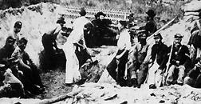
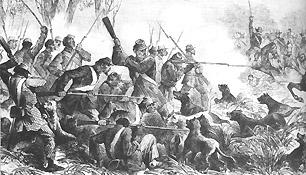
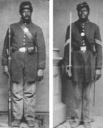

|
In the eyes of most Northern whites, military enlistment would not transform
docile slaves into fearless soldiers. Black spokesmen and their white
abolitionist allies challenged this belief and yearned for the opportunity to
demonstrate their military prowess on the field of battle. Shedding the blood of
the Southern chivalry would not only belie notions of racial inferiority but
also secure the freedom promised by the Emancipation Proclamation and give firm
foundation to black demands for equality. Yet to the extent that success under
fire would elevate blacks, failure would degrade them. For both whites and
blacks, much rode on black battlefield performance. Both skeptics and proponents
watched the first black units closely for evidence of martial talents. Nearly
all observers remarked upon the pride the new soldiers took in armed service and
their expertise in disciplined drill. Even scoffers who belittled black military
prowess openly acknowledged the superiority of black soldiers in executing
drillfield evolutions, although they usually attributed such skills to habits of
subordination and aptitude for imitation. But however reassuring to the
advocates of black enlistments, parade-ground polish did not guarantee success
in battle.
The Kansas, Louisiana, and South Carolina black regiments recruited in 1862
offered the earliest tests of black men under arms. In Kansas, James H. Lane's
troops entered the fray against Confederate guerrillas late in 1862. That
fighting resulted in the war's first loss of life by black soldiers in Union
uniforms, but distance and the character of frontier warfare devalued these
exploits in the public eye. The Sea Islands of South Carolina presented a
different situation. There the ex-slave soldiers recruited by General Rufus
Saxton boasted abolitionist officers whose talents with the pen equaled their
talents with the sword, guaranteeing wide publicity for black accomplishments.
In late 1862 and early 1863, South Carolina Colored Volunteers raided the
coastal rivers from Port Royal to northern Florida, liberating hundreds of
slaves from the interior, securing supplies for the army, and augmenting their
own ranks. They engaged enemy soldiers, withstood fire from Confederate
batteries, and evened old scores with their masters. As their officers freely
acknowledged, the ex-slaves' unrivaled familiarity with the local terrain
ensured the success of these expeditions. Proud of the performance of his men
and convinced of their unbounded potential as soldiers, the commander of the 1st
South Carolina Volunteers, abolitionist Thomas W. Higginson, wrote stirring
descriptions of his regiment's operations for the Northern press. The cool
demeanor of the South Carolina regiments under fire convinced sympathetic
observers that black soldiers could meet the enemy with courage. It remained
only for uniformed blacks to engage successfully in formal battle against
Confederate forces for the verdict to be conclusive.
Before long black soldiers had that chance. In May 1863, just as the federal
government launched large-scale recruitment of blacks, men from three previously
enlisted Louisiana black regiments participated in an assault upon the strongly
fortified Confederate post of Port Hudson, on the Mississippi River north of
Baton Rouge. The 1st and 3rd Louisiana Native Guards, led largely by black
company officers, shared the field with a newly organized black engineer
regiment, as well as with white units. Confronting an entrenched enemy, the
black soldiers charged repeatedly, braving artillery fire and regrouping after
repulse to mount further assaults. Although the Union forces failed to capture
the Confederate works, the black soldiers won encomiums from their white
comrades-in-arms and even from General Nathaniel P. Banks, never excessive in
his praise of black abilities. Banks assured his superiors that the manner in
which the Louisiana black soldiers had withstood combat fully justified the
policy of placing them under arms.
|

The Fifth-Fourth Massachusetts camps at Fort Wagner, prior to
their celebrated charge.
|
In early June 1863, hard on the heels of Port Hudson, the Confederates
attacked black troops at Milliken's Bend, Louisiana. The outnumbered Union
forces consisted of a white regiment from Iowa and two newly organized Louisiana
black units, the latter ill-trained and poorly armed. In the first charge the
ex-slaves did not handle their guns well. As the enemy advanced, however, they
met the rebels with fixed bayonets and rifle butts and held them back in fierce
hand-to-hand fighting that made even seasoned officers blanch. Forced at length
to retreat before the Confederate onslaught, the Union soldiers managed,
however, to hold the line until Navy gunboats forced the enemy to withdraw.
Reports of the battle at Milliken's Bend praised the courage of the black
soldiers and went far to reduce skepticism within Union ranks. A Confederate
battle report went further, asserting that the black soldiers had resisted the
charge "with considerable obstinacy, while the white or true Yankee portion ran
like whipped curs..."
In July 1863, the 54th Massachusetts Volunteers matched the exploits of the
Louisiana black regiments with an assault on a stronghold in the outlying
defenses of Charleston. Recruited from throughout the North and only recently
arrived in South Carolina, the Massachusetts regiment joined white units in an
ill-fated attempt to capture Fort Wagner. Assigned the frontal position in a
direct assault at the insistence of their commander, the Northern black soldiers
suffered withering enemy fire and ruinous casualties. They nevertheless reached
the Confederate parapet, only to be driven back after still further losses. The
bloody outcome of the assault suggested to many observers that the Massachusetts
blacks had in fact been sent into deliberate slaughter by commanders who valued
black lives less than white. The fallen black soldiers, who shared death and a
common grave with their colonel, abolitionist Robert G. Shaw, earned heroic
status in exchange for their sacrifice. Together, Fort Wagner, Milliken's Bend,
and Port Hudson had demonstrated beyond a doubt that black soldiers--whether
Northern freemen, Southern freemen, or former slaves--could withstand the
rebels' most murderous fire.
In fending off imputations of docility and cowardice, the first black
regiments that took the field both modified white opinion and electrified black
freemen and bondsmen. As the war dragged on, pride in the achievements of Port
Hudson, Milliken's Bend, and Fort Wagner helped swell black enlistments and
strengthen black demands for equality within the army and without. By their
sacrifice, black soldiers irreversibly transformed the meaning of the war.
But even as thousands of new black soldiers donned the Union uniform, the
strategy of the war changed dramatically, and black soldiers entered an army
that offered fewer opportunities for battlefield glory. With the fall of
Vicksburg and Port Hudson in July 1863, the Union army had gained control of the

An artist's rendition of the Fort Pillow massacre, with
unarmed African-American troops trying to surrender and being fired upon at
point-blank range.
|
Mississippi River, dividing the Confederacy and leaving miles of river
fortifications to garrison, Union-supervised plantations and contraband camps to
guard, and long lines of transportation and communication to protect. For the
remainder of the war, these duties fell largely to units of the U.S. Colored
Troops. While the drama of the western theater shifted to General William T.
Sherman's relentless advance upon Atlanta, followed by his free-wheeling march
to the sea, tens of thousands of black soldiers labored far from the battlefront
to make such movements possible, supporting seemingly endless supply lines and
protecting Sherman's armies from rear guard Confederate attack and guerrilla
disruption. Sherman took no black troops with his advancing forces, arguing that
he preferred to rely upon seasoned veterans rather than untried recruits, but
also not bothering to disguise his unshakably low opinion of black men in
uniform.
Excluded from Sherman's army, black soldiers in the western theater nonetheless
saw scattered action during 1864. Black troops participated in General Banks's
ill-starred Red River expedition early in the year, with black engineers
constructing dams that permitted the retreat of stranded Union gunboats. At
forts in Kentucky, Tennessee, Mississippi, and Alabama, black garrisons met
attacks by Confederate forces under General Nathan B. Forrest, a prominent
antebellum slave trader. Anxious to make his mark and intimidate the black
regiments and white Southern loyalists who manned many of the Mississippi Valley
fortifications, Forrest urged his soldiers to fight ferociously. In April 1864,
perhaps taking his orders too literally, Forrest's men slaughtered the largely
black Union garrison at Fort Pillow, Tennessee, after it had surrendered. A wave
of outrage swept the Northern army and the Northern public, and black soldiers
everywhere added Fort Pillow to their battle cries. "Remember Fort Pillow"
bitterly attested to the fate that might follow surrender and spurred black
warriors to fight with special desperation. When, for example, the Union
commander at Athens, Alabama, surrendered to General Forrest in September 1864,
black soldiers among the garrison pleaded that the battle continue, preferring a
fight to the death over capture by Forrest's men.
In addition to countless armed encounters with rebel guerrillas during 1864,
black soldiers in the western theater also fought in actions designed to capture
or disrupt Confederate saltworks, ironworks, and transport networks. And when
Confederate General John Hood, repulsed by Sherman's smashing advance into
Georgia, turned to invade Tennessee, black soldiers helped shatter Hood's forces
at the battle of Nashville in December 1864. That battle, which extinguished
Confederate hopes in Tennessee, tested many black units for the first time. Such
confrontations, although less stirring than the dramatic engagements of 1863,
|

On many occasions, Confederates used dogs to attack black
soldiers. This was a violation of the 19th century etiquette of warfare, which
reflects both the changing nature of warfare as well as the extent to which
Confederates went to show disrespect for black troops.
|
continued to transform the consciousness of black and white alike. Many white
soldiers held firm to their contempt for blacks while readily accepting that
black bodies could stop rebel bullets, but common engagement against the
Confederate foe pushed some white soldiers to a positive appreciation of black
abilities. In October 1864, newly recruited Kentucky ex-slaves marched into
battle at Saltville, Virginia amid insults from their white comrades. They
marched out to respectful silence after proving their mettle under fire.
Similarly, after the battle of Nashville, a Tennessee recruiter responsible for
enlisting many of the battle's black casualties, captured something of the
egalitarian implications of black participation when he noted that black and
white bodies lay side by side upon the bloodied field. "Death," he proclaimed,
"had known no distinction of color..."
In the eastern theater, the character of warfare also changed in 1864 and
1865. With Ulysses S. Grant's assumption of command in the spring of 1864, the
Union armies massed for a grinding endurance contest against the Confederate
forces under Robert E. Lee. After carnage at the Wilderness and Cold Harbor,
Grant marched the Army of the Potomac to join the Army of the James. By the
summer of 1864, Grant's forces stood immobilized in trench lines around
Petersburg and Richmond, the conflict a stalemate. For ten months, the behemoths
faced each other in grueling siege operations. Stand-up battles with troops
advancing across open fields gave way for the most part to trench construction,
picket duty, reconnaissance, and short advances--only to dig new defenses. In
the rifle pits of the armies of the James and the Potomac, thousands of black
soldiers held portions of the Union lines. Their ranks included most of the free
black regiments recruited in the North, as well as black regiments from
Maryland, the District of Columbia, Virginia, and North Carolina. In the fall of
1864, newly recruited black troops from Kentucky joined their comrades before
Petersburg. At the end of the year, consolidation of the black regiments created
the all-black 25th Army Corps, commanded by General Godfrey Weitzel, which
represented the largest concentration of black soldiers engaged in any one
theater during the war.
While most black troops in the East sweated in the trenches before Petersburg
and Richmond, some saw other action in 1864 and 1865. Along the South Atlantic
coast, black soldiers participated in the battles of Olustee, Florida, and Honey
Hill, South Carolina, and numbered among the first Union troops to march
victoriously into Charleston. In December 1864 and January 1865, black regiments
from the Army of the James took part in expeditions against Fort Fisher, North
Carolina. But throughout the last year of the war, costly and often dispiriting
siege warfare in Virginia claimed the energies of the vast majority of black
soldiers.
|

Sgt. Harry Stewart and Pvt. Abraham Brown of the
Massachusetts 54th
|
In the task of holding and fortifying their lines, all Union soldiers
entrenched before Petersburg and Richmond wielded the pick and shovel more often
than the musket. But charges abounded that blacks dug the trenches only for
whites to occupy them. And when a rare opportunity for dramatic action arose at
the battle of the Crater in July 1864, the black troops initially promised a
leading position were instead ordered into reserve. General Grant later asserted
that he changed the battle order to forestall charges of using blacks only as
cannon fodder. Instead, he let white soldiers lead the assault across a crater
formed by a failed attempt to explode the rebel works. Blacks followed the
charge, after Confederate fire had littered the field with their dead and
wounded white comrades. Unable to advance or find shelter in the open crater,
they too suffered decimation. When the carnage ended, the black soldiers might
well have regretted not having had the lead.
After a weary winter in the trenches, the black soldiers of the 25th Army
Corps looked to the spring campaign of 1865 with renewed hope of participating
in the final defeat of the rebel armies. Some fought in the scattered
engagements that marked the opening of the struggle, but most continued to
fortify the Union line and press the enemy's entrenchments. When at last the
Union forces broke through rebel lines and the Confederates evacuated Petersburg
and Richmond, thousands of black soldiers followed the retreating enemy and
entered the long-besieged cities. They arrived in Petersburg to the cheers of
welcoming slaves and ranked among the first Union soldiers to occupy Richmond.
Although dispute later raged as to which units had reached the Confederate
capital first, the news that initially raced across the telegraph wires placed
black soldiers in the lead. Receiving that word, Massachusetts Governor John A.
Andrew exulted: "The colored men received late, got in first, and this is
Scripture fulfilled."
Source: Freedmen and Southern Society Project, Freedom, A
Documentary History of Emancipation, 1861-1867 (New York: Cambridge
University Press, 1985), 517-22.
|